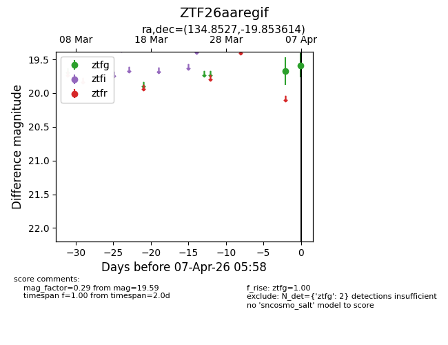
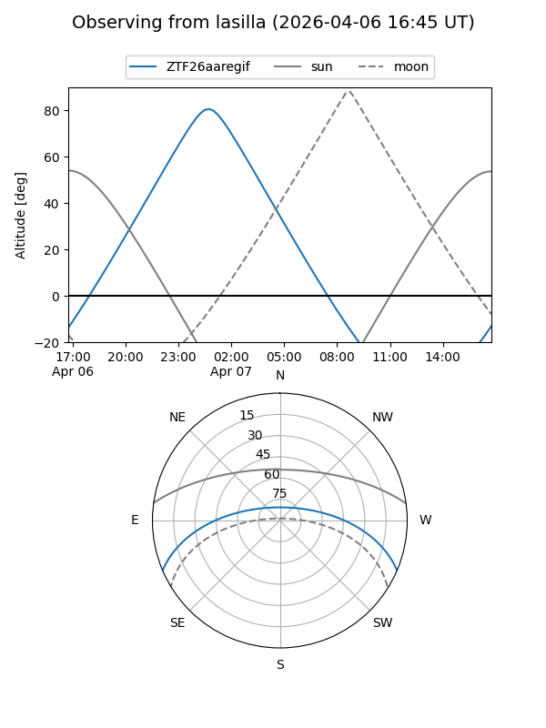
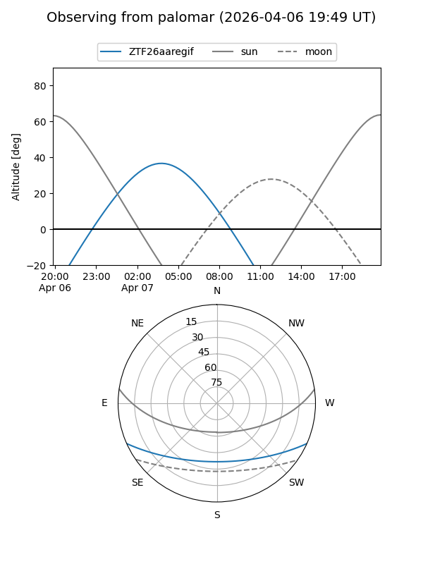

ZTF26aaregif
Target ZTF26aaregif at 2026-04-07 06:02
Aliases and brokers:
FINK: link
Lasair: link
ALeRCE: link
alt names
ZTF26aaregif (ztf,fink_ztf)
Coordinates:
equatorial (ra, dec) = 134.8527,-19.85361
equatorial (HMS+DMS) = 08:59:24.65,-19:51:13.01
galactic (l, b) = (246.5067,+16.77692)
Flags:
Photometry:
last ztfg=19.59
2 ztfg detections
Lightcurve

Visibility


Additional plots